New resources
My newest resources appear here first. The list updates automatically.
48 resources
Texas – Italian Reading Comprehension Worksheet (Scheda): Cloze & Listening
Tettonica delle placche – Italian Reading Comprehension Worksheet
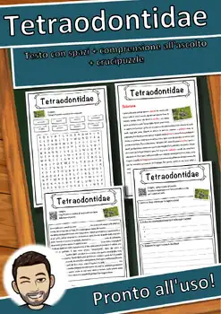
Tetraodontidae – Italian Reading Comprehension Worksheet (Scheda didattica)
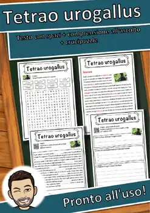
Tetrao urogallus – Italian Reading Comprehension Worksheet (Scheda didattica)

Tetano – Italian Reading Comprehension Worksheet (Scheda): Cloze & Listening

Testudines – Italian Reading Comprehension Worksheet (Scheda): Cloze & Listening
Testo narrativo – Italian Reading Comprehension Worksheet (Scheda didattica)
Testo – Italian Reading Comprehension Worksheet (Scheda): Cloze & Listening
Testimoni di Geova – Italian Reading Comprehension Worksheet (Scheda didattica)

Math Mosaic FREE Sampler | Multiplication Color Puzzle | Grades 2-3
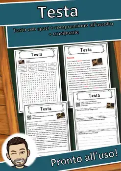
Testa – Italian Reading Comprehension Worksheet (Scheda): Cloze & Listening
Tessuto cartilagineo – Italian Reading Comprehension Worksheet

Terre rare – Italian Reading Comprehension Worksheet (Scheda): Cloze & Listening
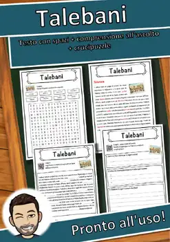
Talebani – Italian Reading Comprehension Worksheet (Scheda): Cloze & Listening
Terra sottratta al mare – Italian Reading Comprehension Worksheet

Terra – Italian Reading Comprehension Worksheet (Scheda): Cloze & Listening

Terbio – Italian Reading Comprehension Worksheet (Scheda): Cloze & Listening
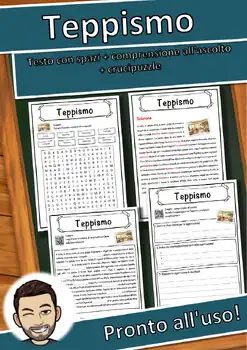
Teppismo – Italian Reading Comprehension Worksheet (Scheda): Cloze & Listening
Teoria del complotto – Italian Reading Comprehension Worksheet
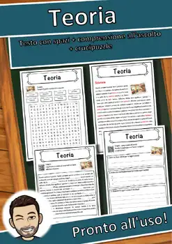
Teoria – Italian Reading Comprehension Worksheet (Scheda): Cloze & Listening
Teologia – Italian Reading Comprehension Worksheet (Scheda): Cloze & Listening
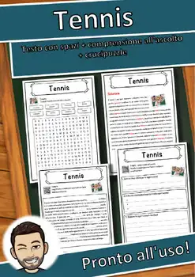
Tennis – Italian Reading Comprehension Worksheet (Scheda): Cloze & Listening

Tennesso – Italian Reading Comprehension Worksheet (Scheda): Cloze & Listening
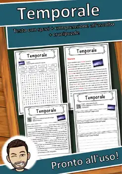
Temporale – Italian Reading Comprehension Worksheet (Scheda): Cloze & Listening
Tempesta – Italian Reading Comprehension Worksheet (Scheda): Cloze & Listening
Temperatura – Italian Reading Comprehension Worksheet (Scheda didattica)
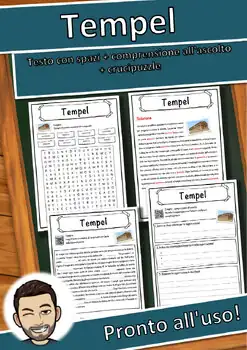
Tempel – Italian Reading Comprehension Worksheet (Scheda): Cloze & Listening

Tellurio – Italian Reading Comprehension Worksheet (Scheda): Cloze & Listening
Telescopio – Italian Reading Comprehension Worksheet (Scheda): Cloze & Listening
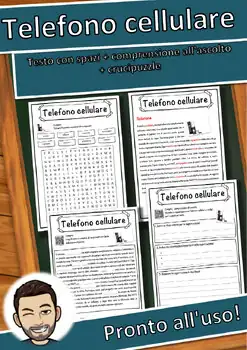
Telefono cellulare – Italian Reading Comprehension Worksheet (Scheda didattica)
Telefono – Italian Reading Comprehension Worksheet (Scheda): Cloze & Listening
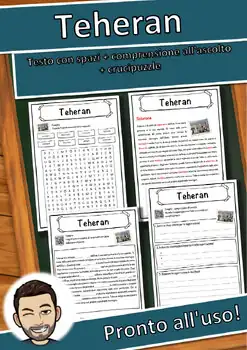
Teheran – Italian Reading Comprehension Worksheet (Scheda): Cloze & Listening

Tecnezio – Italian Reading Comprehension Worksheet (Scheda): Cloze & Listening
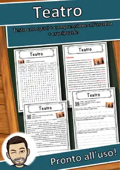
Teatro – Italian Reading Comprehension Worksheet (Scheda): Cloze & Listening
Tauromachia – Italian Reading Comprehension Worksheet (Scheda didattica)

Tauben – Italian Reading Comprehension Worksheet (Scheda): Cloze & Listening
Tattoo – Italian Reading Comprehension Worksheet (Scheda): Cloze & Listening
Tastiera elettronica – Italian Reading Comprehension Worksheet
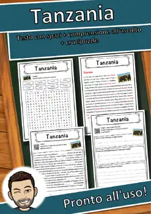
Tanzania – Italian Reading Comprehension Worksheet (Scheda): Cloze & Listening
Tantalio – Italian Reading Comprehension Worksheet (Scheda): Cloze & Listening

Tamburo – Italian Reading Comprehension Worksheet (Scheda): Cloze & Listening

Talpidae – Italian Reading Comprehension Worksheet (Scheda): Cloze & Listening

Talmud – Italian Reading Comprehension Worksheet (Scheda): Cloze & Listening

Tallio – Italian Reading Comprehension Worksheet (Scheda): Cloze & Listening
Tallinn – Italian Reading Comprehension Worksheet (Scheda): Cloze & Listening
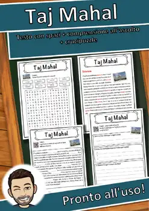
Taj Mahal – Italian Reading Comprehension Worksheet (Scheda): Cloze & Listening

Taiga – Italian Reading Comprehension Worksheet (Scheda): Cloze & Listening
Tahiti – Italian Reading Comprehension Worksheet (Scheda): Cloze & Listening
No resources found – try a different search term or filter.